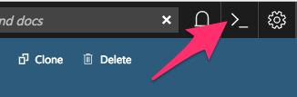

Step Zero: Kubernetes on Microsoft Azure Container Service (AKS)¶
Prepare your Azure shell environment. You have two options, one is to use the Azure interactive shell, the other is to install the Azure command-line tools locally. Instructions for each are below.
Using the Azure interactive shell. The Azure Portal contains an interactive shell that you can use to communicate with your Kubernetes cluster. To access this shell, go to portal.azure.com and click on the button below.

Note
- If you get errors like
could not retrieve token from local cache, try refreshing your browser window. - The first time you do this, you’ll be asked to create a storage account where your shell filesystem will live.
Install command-line tools locally. You can access the Azure CLI via a package that you can install locally.
To do so, first follow the installation instructions in the Azure documentation. Then run the following command to connect your local CLI with your account:
az login
You’ll need to open a browser and follow the instructions in your terminal to log in.
Activate the correct subscription. Azure uses the concept of subscriptions to manage spending. You can get a list of subscriptions your account has access to by running:
az account list --refresh --output table
Pick the subscription you want to use for creating the cluster, and set that as your default.
az account set -s <YOUR-CHOSEN-SUBSCRIPTION-NAME>Create a resource group. Azure uses the concept of resource groups to group related resources together. We need to create a resource group in a given data center location. We will create computational resources within this resource group.
az group create \ --name=<RESOURCE-GROUP-NAME> \ --location=centralus \ --output table
where:
--namespecifies the name of your resource group. We recommend using something that uniquely identifies this hub. For example, if you are creating a resource group for UC Berkeley’s 2018 Spring Data100 Course, you may give it a<RESOURCE-GROUP-NAME>ofucb_2018sp_data100_hub.
--locationspecifies the location of the data center you want your resource to be in. In this case, we used thecentraluslocation. For other options, see the Azure list of locations that support AKS.
--output tablespecifies that the output should be in human readable format, rather than the default JSON output. We shall use this with most commands when executing them by hand.Note
Consider setting a cloud budget for your Azure account in order to make sure you don’t accidentally spend more than you wish to.
Enable the cloud APIs required before creating a cluster.
The following commands enable various Azure tools that we’ll need in creating and managing the JupyterHub.
az provider register --name Microsoft.Network --wait az provider register --name Microsoft.Compute --wait az provider register --name Microsoft.Storage --wait az provider register --name Microsoft.ContainerService --wait
Note
Each of these commands may take up to several minutes to complete.
Choose a cluster name.
In the following steps we’ll run commands that ask you to input a cluster name. We recommend using something descriptive and short. We’ll refer to this as
<CLUSTER-NAME>for the remainder of this section.The next step will create a few files on your filesystem, so first create a folder in which these files will go. We recommend giving it the same name as your cluster:
mkdir <CLUSTER-NAME> cd <CLUSTER-NAME>
Create an ssh key to secure your cluster.
ssh-keygen -f ssh-key-<CLUSTER-NAME>
It will prompt you to add a password, which you can leave empty if you wish. This will create a public key named
ssh-key-<CLUSTER-NAME>.puband a private key namedssh-key-<CLUSTER-NAME>. Make sure both go into the folder we created earlier, and keep both of them safe!Note
This command will also print out something to your terminal screen. You don’t need to do anything with this text.
Create an AKS cluster.
The following command will request a Kubernetes cluster within the resource group that we created earlier.
az aks create --name <CLUSTER-NAME> \ --resource-group <RESOURCE-GROUP-NAME> \ --ssh-key-value ssh-key-<CLUSTER-NAME>.pub \ --node-count 3 \ --node-vm-size Standard_D2s_v3 \ --kubernetes-version 1.8.2 \ --output table
where:
--nameis the name you want to use to refer to your cluster--resource-groupis the ResourceGroup you created in step 4--ssh-key-valueis the ssh public key created in step 7--node-countis the number of nodes you want in your kubernetes cluster--node-vm-sizeis the size of the nodes you want to use, which varies based on what you are using your cluster for and how much RAM/CPU each of your users need. There is a list of all possible node sizes for you to choose from, but not all might be available in your location.--kubernetes-versionis the version of Kubernetes we want to use.
This should take a few minutes and provide you with a working Kubernetes cluster!
If you’re using the Azure CLI locally, install kubectl, a tool for accessing the Kubernetes API from the commandline:
az aks install-cli
Note: kubectl is already installed in Azure Cloud Shell.
Get credentials from Azure for
kubectlto work:az aks get-credentials \ --name <CLUSTER-NAME> \ --resource-group <RESOURCE-GROUP-NAME> \ --output table
where:
--nameis the name you gave your cluster in step 7--resource-groupis the ResourceGroup you created in step 4
- Check if your cluster is fully functional
kubectl get nodeThe response should list three running nodes and their kubernetes versions! Each node should have the status of
Ready, note that this may take a few moments.
Note
Azure AKS is still in preview, and not all features might work as intended. In particular,
- You have to not use RBAC, since AKS does not support it yet.
- You should skip step 2 (granting RBAC rights) with the “initialization” section when setting up helm.
Congrats. Now that you have your Kubernetes cluster running, it’s time to begin Creating your JupyterHub.